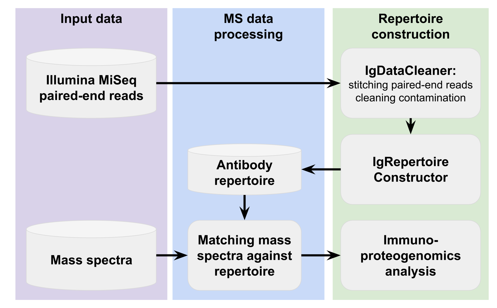
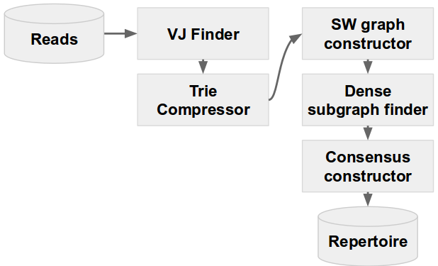

IgRepertoireConstructor 2.0 manual
1. What is IgRepertoireConstructor?
2. Installation
2.1. Verifying your installation
3. IgRepertoireConstructor usage
3.1. Basic options
3.2. Advanced options
3.3. Examples
3.4. Output files
4. MassSpectraAnalyzer usage
4.1. Basic options
4.2. Advanced options
4.3. Examples
4.4. Output files
5. Examples
6. Antibody repertoire representation
6.1. CLUSTERS.FASTA file format
6.2. RCM file format
7. Feedback and bug reports
7.1. Citation
1. What is IgRepertoireConstructor?
IgRepertoireConstructor is a tool for construction of antibody repertoire and immunoproteogenomics analysis.
IgRepertoireConstructor includes two parts:
- IgRepertoireConstructor — a tool for construction of antibody repertoire from cleaned Illumina Ig-Seq library.
- MassSpectraAnalyzer — a tool for analysis of matching mass spectra against constructed repertoire.
IgRepertoireConstructor pipeline is shown below:

IgRepertoireConstructor pipeline by stages is shown below:

2. Installation
IgRepertoireConstructor requires the following pre-installed dependencies:
- 64-bit Linux system
- g++ (version 4.7 or higher)
- cmake (version 2.8.8 or higher)
- Python 2 (version 2.7 or higher), including:
- zlib
- libbz2
To install IgRepertoireConstructor, type:
./prepare_cfg; make
2.1. Verifying your installation
For testing purposes, IgRepertoireConstructor comes with several toy data sets.
► To try IgRepertoireConstructor on the test data set, run:
./ig_repertoire_constructor.py --test
If the installation is successful, you will find the following information at the end of the log:
Thank you for using IgRepertoireConstructor!
Log was written to igrepcon_test/ig_repertoire_constructor.log
Other test data set files can be found in the test_dataset directory.
► To try MassSpectraAnalyzer on test data set, run:
./mass_spectra_analyzer.py --test
If the installation is successful, you will find the following information at the end of the log:
Spectras processed: example_HC_chymo_CID.mzid.spectra, example_HC_trypsin_CID.mzid.spectra
Metrics written to <your_installation_directory>/ms_analyzer_test/metrics.txt
Covered CRDs written to <your_installation_directory>/ms_analyzer_test/covered_cdrs.txt
PSM on IG regions written to <your_installation_directory>/ms_analyzer_test/psm_on_ig_regions.txt
Figures and statistics saved in <your_installation_directory>/ms_analyzer_test
3. IgRepertoireConstructor usage
To run IgRepertoireConstructor, type:
./ig_repertoire_constructor.py [options] -s <filename> -o <output_dir>
3.1. Basic options:
-s <filename>
FASTQ file with Illumina reads (required).
-o/--output <output_dir>
Output directory (required).
-t/--threads <int>
the number of parallel threads. The default value is 16.
--test
Running on the toy test dataset. Command line corresponding to the test run is equivalent to the following:
./ig_repertoire_constructor.py -s test_dataset/merged_reads.fastq -o igrepcon_test
--help
printing help.
3.2. Advanced options:
--tau <int>
Maximum allowed number of mismatches between two reads corresponding to the same antibody. The default value is 4.
NOTE: Be careful, using large value can significantly slow up processing or even can be inappropriate.
Reasonable value lies between 1 and 6.
--chain/C <str>
Ig chain type: all [default] (for both heavy and light chains) /
heavy / light (for both kappa and lambda chains) /
lambda / kappa
--no-pseudogenes
Do not use pseudogenes along with normal gene segments for VJ alignment
--organism <str>
Organism (human [defaut] and mouse only are supported for this moment)
3.3. Examples
To construct antibody repertoire from Illumina reads, covering variable regions of immunoglobulins
./ig_repertoire_constructor.py -s reads.fastq -o output_dir
3.4. Output files
IgRepertoireConstructor creates working directory (which name was specified using option -o) and outputs there the following files:
- Final repertoire files:
- final_repertoire.fa — CLUSTERS.FASTA file with constructed repertoire (see details in Antibody repertoire representation).
- final_repertoire.rcm — RCM file with constructed repertoire (see details in Antibody repertoire representation).
- final_repertoire_stripped.fa — CLUSTERS.FASTA file with constructed repertoire filtered by component size (component size >= 5)
- supernodes.fa — FASTA file with naive repertoire builded using supernodes (reads with abundance >= 5)
- VJ finder output files:
- vj_finder/cropped.fa — FASTA file with initial reads, which were correctly reversed, aligned on V and J genes and cropped using VJ finder
- vj_finder/bad.fa — FASTA file with initial reads, which were filtered by aligning on V and J genes
- vj_finder/add_info.csv — CSV file with alignment info (consistent with cropped.fa); for each read it stores read ID, best hit V gene position, score and ID and the same for best hit J gene
- Dense subgraph finder files:
- dense_subgraph_finder/dense_subgraph_finder.log — log of DenseSubgraphFinder run
- dense_subgraph_finder/dense_subgraphs.txt — dense subgraph decomposition in simple format: each line contains cluster label
- Auxiliary files:
- ig_repertoire_constructor.log — full log of IgRepertoireConstructor run
- compressed.fa — FASTA file, which contains compressed reads, result of IgTrieCompressor; each cropped read collapsed to minimal presented prefix.
Thus it's guarantied that each read is not prefix of any other read, only unique prefixes are extracted.
For each unique prefix-read its abundance (the number of joined reads) is added to its ID
- map.txt — file, which stores read compression map provided by igTrieCompressor.
This file is consistent with cropped.fa, each line contains the number (zero based) of target prefix-read in compressed.fa file
- sw.graph — Smith-Waterman graph constructed on compressed reads from compressed.fa in METIS *.graph format (see METIS 5.1.x Manual for format description)
4. MassSpectraAnalyzer usage
MassSpectraAnalyzer takes as an input result of matching of mass spectra against the constructed repertoire in mzIdentML 1.1 format (e.g., generated by MS-GF+) and computes multiple statistics showing coverage of the constructed repertoire by mass spectra.
► To run MassSpectraAnalyzer, type:
./mass_spectra_analyzer.py [options] -o <output_dir> input_file_1.mzid ... input_file_N.mzid
4.1. Basic options:
inputs
Input files with mass spectra alignment to protein database in mzIdentML 1.1 format.
-o <output_dir>
output directory (required).
--test
Running on the toy test data set.
--help, -h
Printing help.
4.2. Advanced options:
--regions <filename>
File with information about framework and CDRs for protein sequences from used database in IgBLAST format.
Example of file with labeled regions is given below:
Query= Antibody_sequence_1
CDR2-IMGT 51 58
FR2-IMGT 34 50
FR1-IMGT 1 25
FR3-IMGT 59 94
CDR1-IMGT 26 33
CDR3-IMGT 95 110
Query= Antibody_sequence_2
CDR2-IMGT 51 58
FR2-IMGT 34 50
FR1-IMGT 1 25
FR3-IMGT 59 94
CDR1-IMGT 26 33
CDR3-IMGT 95 111
where Antibody_sequence_1 and Antibody_sequence_2 are sequences from database.
4.3. Examples:
► To compute statistics for both chymo and trypsin mass spectra datasets and labeled regions, run the following command:
./mass_spectra_analysis.py --output output_dir --regions regions.align example_HC_chymo_CID.mzid example_HC_trypsin_CID.mzid
4.4. Output files:
- Statistics:
- metrics.txt - file with basic statistics for each of given mass spectrum alignments.
- covered_cdrs.txt - file with information about number of sequences with at least one peptide spectrum match on corresponding region.
- psm_on_ig_regions.txt - file with information about number of peptide spectrum matches aligned to corresponding regions of sequences.
- Statistics visualization:
- PSM_cov.png - PNG file with plot showing coverage by peptide spectrum matches along antibody sequence.
- peptide_cov.png - PNG file with plot showing coverage by peptide spectrum matches along antibody sequence, consider only scans with unique alignment to database.
- PSM_per_scan.png - PNG file with histogram of distribution of number of peptide spectrum matches per scan.
- peptide_length.png - PNG file with histogram of distribution of peptide length.
5. Examples
Example shows IgRepertoireConstructor pipeline in action for merged paired-end Illumina MiSeq library including reads reads.fastq and mass spectra AspN_CID.mzXML corresponding to the same antibody repertoire.
► To run IgRepertoireConstructor with standard settings, type the following command:
./ig_repertoire_constructor.py -s reads.fastq -o repertoire_constructing
Sequences of the constructed repertoire are located in repertoire_constructing/constructed_repertoire.clusters.fa. They can be converted into amino acid sequences and used as a database for matching mass spectra AspN_CID.mzXML (e.g., using MS-GF+ tool). Let result of MS-GF+ tool be a file AspN_CID.mzId.
► To run MassSpectraAnalyzer on AspN_CID.mzId file, type the following command:
./mass_spectra_analyzer.py -o ms_analysis AspN_CID.mzId
Statistics for mass spectra alignment can be found in ms_analysis directory.
6. Antibody repertoire representation
We used two files for representation of repertoire for the set of clustered reads: CLUSTERS.FASTA and RCM.
6.1. CLUSTERS.FASTA file format
CLUSTERS.FASTA is a FASTA file, where sequences correspond to the assembled antibodies.
Each header contains information about corresponding antibody cluster (id and size):
>cluster___1___size___3
CCCCTGCAATTAAAATTGTTGACCACCTACATACCAAAGACGAGCGCCTTTACGCTTGCCTTTAGTACCTCGCAACGGCTGCGGACG
>cluster___2___size___2
CCCCTGCAATTAAAATTGTTGACCACCTACATACCAAAGACGAGCGCCTTTACGCTTGCCTTTAGTACCTCGCAACGGCTGCGG
>cluster___3___size___1
CCCCTGCAATTAAAATTGTTGACCACCTACATACCAAAGACGAGCGCCTTTACGCTTGCCTTTAGTACCTCGCAACGGCTGCGGAC
6.2. RCM file format
Every line of RCM (read-cluster map) file contains information about read name and corresponding cluster ID:
MISEQ@:53:000000000-A2BMW:1:2114:14345:28882 1
MISEQ@:53:000000000-A2BMW:1:2114:14374:28884 1
MISEQ@:53:000000000-A2BMW:1:2114:14393:28886 1
MISEQ@:53:000000000-A2BMW:1:2114:16454:28882 2
MISEQ@:53:000000000-A2BMW:1:2114:16426:28886 2
MISEQ@:53:000000000-A2BMW:1:2114:15812:28886 3
Reperoire described in the example above consists of three antibodies. E.g., the antibody with ID 1 has abundancy 3, since it was constructed from three reads:
MISEQ@:53:000000000-A2BMW:1:2114:14345:28882
MISEQ@:53:000000000-A2BMW:1:2114:14374:28884
MISEQ@:53:000000000-A2BMW:1:2114:14393:28886
NOTE: IDs in CLUSTERS.FASTA and RCM files are consistent.
7. Feedback and bug reports
Your comments, bug reports, and suggestions are very welcome.
They will help us to further improving on IgRepertoireConstructor.
If you have any troubles with running IgRepertoireConstructor, please send us the log file from the output directory.
Address for communications: igtools_support@googlegroups.com.
7.1. Citation
If you use IgRepertoireConstructor in your research, please refer to Safonova et al., 2015.